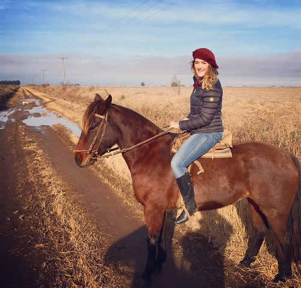

The land of my the best soccer team, the best steak, and also my parents!

Argentina is a place very dear to my heart and closely tied to my identity. Both of my parents immigrated from there and my entire extended family still resides there. It's known for its European influences particularly in the architecture of its capital Buenos Aires, its exceptional soccer team and its world-class beef. I visited my family on our farm where my uncle breeds traditional Argentinean "Criollo" horses and has some of the best asados (barbecues) ever. I also toured Buenos Aires's colorful neighborhood of La Boca and its bustling and impressive main avenue, 9 de Julio, on which stands the famous Obelisk and happens to be the widest avenue in the world.